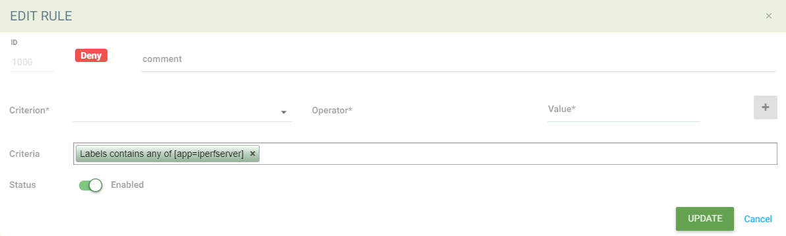
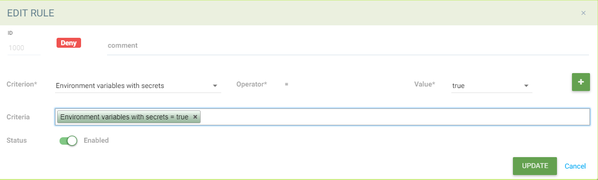

アドミッションコントロール
イメージ／コンテナデプロイメントの制御
KubernetesやOpenShiftなどのオーケストレーションプラットフォームとのアドミッションコントロール統合により、SUSE® Securityはオーケストレーションプラットフォームのデプロイパイプライン内で重要な役割を果たしています。Deploymentなどのクラスターリソースが作成されると、クラスターのapiserverからのリクエストは、ユーザー定義のアドミッションコントロールルールに基づいてデプロイするか拒否するかを判断するために、SUSE® Securityコントローラーのいずれかに渡されます。ポリシー決定SUSE® Securityは、施行のためにクラスターapiserverに返されます。
この機能はKubernetes 1.9+およびOpenShift 3.9+でサポートされています。SUSE® Securityでアドミッションコントロール機能を使用する前に、クラスターapiserverに渡される`--admission-control`引数からアドミッションコントロールをセットアップすることは可能ですが、動的アドミッションコントロールを使用することをお勧めします。設定については、以下のKubernetesおよびOpenShiftのセクションを参照してください。
Kubernetes
ValidatingAdmissionWebhookおよびMutatingAdmissionWebhookプラグインはデフォルトで有効になっています。
admissionregistration.kubernetes.io/v1beta1が有効になっているか確認してください。
kubectl api-versions | grep admissionregistration
admissionregistration.k8s.io/v1beta1OpenShift
ValidatingAdmissionWebhookおよびMutatingAdmissionWebhookプラグインはデフォルトで無効になっています。これらを有効にする方法については、OpenShiftデプロイセクションの例を参照してください。OpenShift APIおよびコントローラーサービスの再起動が必要です。
admissionregistration.kubernetes.io/v1beta1が有効になっているか確認してください。
oc api-versions | grep admissionregistration
admissionregistration.k8s.io/v1beta1SUSE® Securityでのアドミッションコントロール（Webhook）の有効化
アドミッションコントロール機能はデフォルトで無効になっています。SUSE® Securityコンソールで有効にするために、ポリシー→アドミッションコントロールページに移動してください。

アドミッションコントロール機能が正常に有効化されると、次のValidatingWebhookConfigurationリソースが自動的に作成されます。確認するには：
kubectl get ValidatingWebhookConfiguration neuvector-validating-admission-webhookサンプル出力：
NAME CREATED AT
neuvector-validating-admission-webhook 2019-03-28T00:05:09ZSUSE® SecurityのValidatingWebhookConfigurationリソースにおける最も重要な情報は、クラスターリソースです。現在、Deployment SUSE® Securityのようなクラスターリソースが登録されると、リクエストはオーケストレーションプラットフォームのapiserverからSUSE® Securityコントローラーのいずれかに送信され、SUSE® Securityポリシー→のAdmission Controlページに定義されたユーザーのルールに基づいて許可または拒否されるかどうかが判断されます。
リソースのデプロイが拒否された場合、通知にイベントが記録されます。
クライアントモードアクセスのKubernetes接続をテストするには、詳細設定に移動します。

特別なケースでは、NodePortサービスを使用したURLアクセス方法が必要になる場合があります。
Admission Control イベント／通知
許可されたイベントと拒否されたイベントのすべての Admission Control イベントは、通知 → セキュリティリスク メニューにあります。
Admission Control 基準
SUSE® Securityは、Admission Control ルールを作成するための多くの基準をサポートしています。これには、CVE高カウント、CVE名、イメージラベル、imageScanned、ネームスペース、ユーザー、runAsRootなどが含まれます。基準評価の可能なソースは、イメージスキャンとデプロイメント Yaml ファイルスキャンの 2 つです。基準がイメージスキャンを必要とする場合、Registry Scanningからのスキャン結果が使用されます。イメージがスキャンされていない場合、アドミッションコントロールルールは適用されません。基準がデプロイメント yaml のスキャンを必要とする場合、Kubernetes デプロイメントから評価されます。一部の基準は、イメージスキャンまたはデプロイメント yaml スキャンのいずれかの結果を使用します。
-
CVEスコアは、イメージスキャンを必要とする基準の例です。
-
秘密を含む環境変数は、デプロイメント yaml スキャンを使用する基準の例です。
-
ラベルと環境変数は、両方のイメージおよびデプロイメント yaml スキャン結果 (論理 OR) を使用して一致を決定する基準の例です。

基準が選択されると、可能な演算子が表示されます。各基準を追加するには、‘+’ ボタンをクリックしてください。
単一のルールで複数の基準を使用する 1 つのアドミッションコントロールルール内の複数の基準の一致ロジックは次のとおりです：
-
単一のルール内の異なる基準タイプには「and」を適用します。
-
同じタイプの複数の基準 (例：複数のネームスペース、レジストリ、イメージ) の場合、
-
最初のポジティブマッチまで、すべてのネガティブマッチ（「含まない」、「いずれでもない」）に「and」を適用します。
-
最初のポジティブマッチの後は、「or」を適用します。
-
ポッドラベルの一致の例
apiVersion: apps/v1
kind: Deployment
metadata:
name: iperfserver
namespace: neuvector-1
spec:
replicas: 1
template:
metadata:
labels:
app: iperfserver一致するルールは次のようになります：

秘密を含む環境変数の一致の例
apiVersion: apps/v1
kind: Deployment
metadata:
name: iperfserver
namespace: neuvector-1
labels:
name: iperfserver
spec:
selector:
matchLabels:
name: iperfserver
replicas: 1
template:
metadata:
labels:
name: iperfserver
spec:
containers:
- name: iperfserver
image: nvlab/iperf
env:
- name: env1
value: AIDAJQABLZS4A3QDU576
- name: env2
valueFrom:
fieldRef:
fieldPath: status.podIP
- name: env5
value: AIDAJQABLZS4A3QDU57E
command:
- iperf
- -s
- -p
- "6068"
nodeSelector:
nvallinone: "true"
restartPolicy: Always一致するルールは次のようになります：

スキャン結果に関連する基準
次の基準は、SUSE® Security アセット > レジストリスキャンページの結果に関連しています：
イメージ、imageScanned、cveHighCount、cveMediumCount、イメージコンプライアンス違反、cveNames など。
SUSE® Security がアドミッションコントロールルールに対して一致を実行する前に、SUSE® Security はクラスターのapiserverからイメージ情報 (例：10.1.127.3:5000/neuvector/toolbox/iperf:latest) を取得します。
（以下の apiserver からのリクエストセクションを参照してください）。イメージは、レジストリサーバー (https://10.1.127.3:5000)、リポジトリ (neuvector/toolbox/iperf)、およびタグ (latest) で構成されています。
SUSE® Security はこの情報を使用して、SUSE® Security アセット → レジストリスキャンページの結果と一致させ、cve 名、cve 高または中のカウントなどの対応する情報を収集します。イメージのコンプライアンス違反は、秘密やsetuid/setgidの違反があるイメージと見なされます。 ユーザーがdockerレジストリからクラスターリソースを作成するために画像を使用している場合、通常、レジストリサーバー情報は空であるかdocker.ioであり、現在SUSE® Securityは空またはdocker.io文字列の代わりにレジストリスキャン結果に一致する以下のハードコーディングされたレジストリサーバーを使用しています。もちろん、レジストリスキャンページに定義されている以下のサポートされているdockerレジストリサーバー以外に他のサーバーがある場合、SUSE® Securityはレジストリスキャン結果を正常に取得することができません。
ユーザーがdockerレジストリからalpineやubuntuなどのビルトインイメージを使用している場合、libraryという隠れた組織名があります。SUSE® SecurityのAssets > Registry scanページでdockerビルトインイメージの結果を見ると、リポジトリ名はlibrary/alpineまたはlibrary/ubuntuになります。現在、SUSE® Securityはdockerレジストリに隠れたlibrary組織名が1つだけ存在することを前提としています。もし1つ以上ある場合、SUSE® Securityもレジストリスキャン結果を正常に取得することができません。 上記の制限は、他のタイプのdockerレジストリサーバーにも適用される可能性があります。
カスタム基準ルールの作成
ユーザーは、デプロイメント時にスキャンされるイメージyamlに見られる一般的なオブジェクトに基づいて、デプロイメントを許可またはブロックするために使用されるカスタマイズされた基準を作成できます。使用するオブジェクトを選択します。例えば、imagePullSecretsと一致する値、例えばexistsです。ルールをさらにターゲットにするために、ネームスペース、PSP/PSA、CVE条件などの追加の基準を使用することも推奨されます。

基準の説明
ディスクアイコンのある基準は、イメージがスキャンされる必要があることを要求し（レジストリスキャンを参照）、ファイルアイコンのある基準はデプロイメントyamlをスキャンします。両方のアイコンがリストされている場合、一致はどちらか（OR）になります。基準が画像スキャンを要求する場合、しかし画像がスキャンされていない場合、そのルールのその部分は無視されます（つまり、ルールはバイパスされ、デプロイメントYAMLもリストされている場合、デプロイメントYAMLのみが一致に使用されます）。スキャンされていない画像がルールをバイパスするのを防ぐために、以下のImage Scanned基準を参照してください。
-
カスタマイズされた基準を追加します。ドロップダウンからオブジェクトを選択します。すべてのカスタム基準は、存在および非存在の演算子をサポートしています。値を許可するものについては、追加の演算子と値を入力できます。値は静的であり、カンマで区切られ、ワイルドカードを含むことができます。
-
特権の昇格を許可します。コンテナが特権の昇格を許可する場合、アクションを拒否として設定することでブロックできます。
-
高い深刻度のCVEの数。これは、イメージ（レジストリ）スキャンの結果を取得し、高い深刻度（CVSSスコアが7以上）の数と一致させます。特定の日数前に報告されたCVEに制限するために、追加の演算子を追加でき、最近のCVEの修正のための時間を与えます。
-
修正のある高い深刻度のCVEの数。これは、イメージ（レジストリ）スキャンの結果を取得し、高い深刻度（CVSSスコアが7以上）と一致させ、かつCVEに対する修正が利用可能であるかどうかを確認します。修正が適用されるべき場合にのみ、高深刻度CVEを含むデプロイメントをブロックする予定であれば、これを選択してください。特定の日数前に報告されたCVEに制限するために、追加の演算子を追加でき、最近のCVEの修正のための時間を与えます。
-
中程度の深刻度のCVEの数。これは、イメージ（レジストリ）スキャンの結果を取得し、中程度の深刻度（CVSSスコアが4から6の間）の数と一致させます。特定の日数前に報告されたCVEに制限するために、追加の演算子を追加でき、最近のCVEの修正のための時間を与えます。
-
CVE名。これは、特定のCVE名（例：CVE-2023-23914、2023-23914、23914、またはユニークなテキスト）に一致し、複数の名前はカンマで区切られます。
-
CVEスコア。最小スコアと、最小CVSSスコアに一致またはそれを超えるCVEの数の両方を設定します。
-
秘密を含む環境変数。デプロイメントのyamlまたはイメージスキャン結果に秘密を含む（または含まない）環境変数があるかどうか。以下の秘密に一致する基準を参照してください。
-
環境変数。デプロイメントのyamlまたはイメージスキャンで特定の環境変数を要求または除外するために使用します。
-
イメージ。特定のイメージ名に基づいて一致し、通常はルールの他の基準と組み合わせて使用されます。
-
イメージコンプライアンス違反。イメージ（レジストリ）のスキャン結果にコンプライアンス違反がある場合に一致します。コンプライアンスチェックの詳細についてはcomplianceを参照してください。
-
OS情報のないイメージ。イメージ（レジストリ）のスキャン結果にOS情報を取得できない場合に一致します。
-
イメージレジストリ。特定のイメージレジストリ名に基づいて一致します。通常、特定のレジストリからのデプロイメントを制限したり、特定の承認されたレジストリからのみデプロイメントを要求するために使用されます。しばしば、ネームスペースなどの他の基準と一緒に使用されます。
-
スキャンされたイメージ。イメージがスキャンされることを要求します。すべてのイメージがスキャンされることを確認するためにしばしば使用され、高い深刻度のCVEなどのスキャンに基づく基準がデプロイメントに適用できるようにします。
-
署名されたイメージ。Sigstore/Cosignの統合を通じてイメージが署名されることを要求します。この基準は、スキャン結果に検証者が存在するかどうかを単純にチェックします。
-
イメージSigstore検証者。特定のSigstore信頼のルート名によってイメージが署名されることを要求します。これは、Assets → Sigstore Verifiersで構成されています。スキャン結果の検証者がルール設定の検証者と一致するかどうかを確認します。
-
ラベル。デプロイメントのyamlまたはイメージスキャン結果に1つ以上のラベルが存在することを要求します。
-
モジュール。イメージ（レジストリ）スキャンの結果として、特定のモジュール（パッケージ、ライブラリ）を含めるか除外することを要求します。
-
ボリュームをマウントします。特定のボリュームがマウントされるのを防ぐために通常使用されます。
-
ネームスペース。特定のネームスペースに対するデプロイメントを許可または制限します。独立して使用されますが、他の基準と組み合わせてネームスペースに対するルールの一致を制限することがよくあります。
-
PSPベストプラクティス。PSPの同等のルール（注：PSPはkubernetes 1.25+から完全に削除されましたが、このSUSE® Security同等のものは1.25+でまだ使用される可能性があります）。特権として実行、ルートとして実行、ホストのPIDネームスペースを共有、ホストのIPCネームスペースを共有、ホストのネットワークを共有、特権の昇格を許可することが含まれます。
-
リソース制限設定（RLC）。CPU制限/リクエスト、メモリ制限/リクエストのためにリソース制限が設定されることを要求し、オペレーターが設定されたリソース値より大きいか、または等しいことを要求することがあります。
-
特権として実行。特権コンテナのデプロイを制限またはブロックするために通常使用されます。
-
ルートとして実行。通常、ルートとして実行されるコンテナのデプロイを制限またはブロックするために使用されます。
-
サービスアカウントにバインドされた高リスクロール。シークレットのリスト、ワークロードに対する任意の操作、RBACリソースの変更、ワークロードリソースの作成、コンテナへのexecを許可するなど、高リスクのサービスアカウントロールを表す複数の基準に一致することができます。
-
ホストのIPCネームスペースを共有します。IPCネームスペースに一致します。
-
ホストのネットワークを共有します。ホストのネットワークを共有するデプロイを許可または不許可にします。
-
-
ホストのPIDネームスペースを共有します。PIDネームスペースに一致します。
-
-
ユーザー。実行時に定義された kubernetesにバインドされたユーザーを許可または不許可にし、userInfoフィールドに表示されます。注意:yaml（アップロード）監査機能は、実行時にバインドされているため、これをチェックできません。
-
ユーザーグループ。実行時に定義された kubernetesにバインドされたユーザーグループを許可または不許可にし、userInfoフィールドに表示されます。 注意:yaml（アップロード）監査機能は、実行時にバインドされているため、これをチェックできません。
-
PSAポリシーに違反します。デプロイメントが制限されたまたはベースラインのPSA Pod Security Standardに違反する場合に一致します（kubernetes 1.25+のPSA定義に相当）。
シークレット検出
環境変数内のシークレットの検出は、次の正規表現を使用して一致します：
Rule{Description: "Password.in.YML",
Expression: `(?i)(password|passwd|api_token)\S{0,32}\s*:\s*(?-i)([0-9a-zA-Z\/+]{16,40}\b)`, ExprFName: `.*\.ya?ml`, Tags: []string{share.SecretProgram, "yaml", "yml"},
Suggestion: msgReferVender},リスクレポートページでは、シークレットが検出されると、アラート形式が表示され、一般的な出力情報が"${variable}=${value}"として表示されます。下の画像の例では、変数"env1=AIDAJQ…"でこれを見ることができます。
検出されたシークレットの種類のリストはこちらにあります。
入場制御モード
SUSE® Securityがサポートするモードは2つあります - モニターとプロテクト。
-
モニター：決定が拒否された場合、イベントログにアラートメッセージが表示されます。この場合、クラスターのapiserverはリソースを正常に作成することが許可されます。注意：ルールのアクションが拒否であっても、モニターモードではこれがアラートのみになります。
-
プロテクト：これはインライン保護モードです。決定が拒否されると、クラスターリソースは正常に作成できず、イベントがログに記録されます。
アドミッションコントロールルール
ルールは許可（ホワイトリスト）または拒否（ブラックリスト）ルールです。ルールは表示されている順序で、上から下に評価されます。許可ルールは最初に評価され、拒否ルールに対する例外（サブセット）を定義するのに役立ちます。リソースのデプロイメントがどのルールにも一致しない場合、デフォルトのアクションはデプロイメントを許可することです。
KubernetesシステムコンテナとSUSE® Securityデプロイメントを有効にするために許可されるべき2つの事前設定されたルールがあります。
アドミッションコントロールルールは、ポッドを作成するすべてのリソース（例：デプロイメント、デーモンセット、レプリカセットなど）に適用されます。
アドミッションコントロールルールの一致順序は：
-
デフォルトの許可ルール（例：システムネームスペース）
-
連邦許可ルール（これが存在する場合）
-
連邦拒否ルール（これが存在する場合）
-
CRDが適用された許可ルール（存在する場合）
-
CRDが適用された拒否ルール（存在する場合）
-
ユーザー定義の許可ルール
-
ユーザー定義の拒否ルール
-
上記のルールのいずれにも一致しない場合は、リクエストを許可します
一致する各段階（1〜7）では、ルールの順序は重要ではありません。リクエストが1つのルールの基準に一致する限り、アクション（許可または拒否）が実行され、リクエストは許可または拒否されます。
アドミッションコントロールルールにおける連携スキャン結果
プライマリ（マスター）クラスターは、連携レジストリとして指定されたレジストリ/リポジトリをスキャンできます。これらのレジストリからのスキャン結果は、すべての管理（リモート）クラスターに同期されます。これにより、管理クラスターのコンソールにスキャン結果を表示し、管理クラスターのアドミッションコントロールルールで結果を使用することができます。レジストリは各クラスターによってスキャンされるのではなく、一度だけスキャンされる必要があり、CPU/メモリおよびネットワーク帯域幅の使用を削減します。詳細については、マルチクラスターセクションを参照してください。
画像署名を要求するためのSigstore/Cosign検証者の設定
検証者の設定については、このセクションをご覧ください。
トラブルシューティング
エラーが発生している場合、マスターノードにアクセスできる場合は、kube-apiserverのログを調査してアドミッションWebhookイベントを検索できます。例:
W0406 13:16:49.012234 1 admission.go:236] Failed calling webhook, failing open neuvector- validating-admission-webhook.neuvector.svc: failed calling admission webhook "neuvector-validating- admission-webhook.neuvector.svc": Post https://neuvector-svc-admission- webhook.neuvector.svc:443/v1/validate/1554514310852084622-1554514310852085078?timeout=30s: dial tcp: lookup neuvector-svc-admission-webhook.neuvector.svc on 8.8.8.8:53: no such host上記のログは、クラスターのkube-apiserverがneuvector-svc-admission-webhook.neuvector.svc名を解決できないため、SUSE® Security webhookにリクエストを正常に送信できないことを示しています。
W0405 23:43:01.901346 1 admission.go:236] Failed calling webhook, failing open neuvector- validating-admission-webhook.neuvector.svc: failed calling admission webhook "neuvector-validating- admission-webhook.neuvector.svc": Post https://neuvector-svc-admission-webhook.neuvector.svc:443/v1/validate/1554500399933067744-1554500399933068005?timeout=30s: net/http: request canceled while waiting for connection (Client.Timeout exceeded while awaiting headers)上記のログは、クラスターのkube-apiserverがneuvector-svc-admission-webhook.neuvector.svc名を誤ったIPアドレスで解決するため、SUSE® Security webhookにリクエストを正常に送信できないことを示しています。これは、api-serverとコントローラーノード間のネットワーク接続またはファイアウォールの問題を示している可能性もあります。
W0406 01:14:48.200513 1 admission.go:236] Failed calling webhook, failing open neuvector- validating-admission-webhook.xyz.svc: failed calling admission webhook "neuvector-validating- admission-webhook.xyz.svc": Post https://neuvector-svc-admission- webhook.xyz.svc:443/v1/validate/1554500399933067744-1554500399933068005?timeout=30s: x509: certificate is valid for neuvector-svc-admission-webhook.neuvector.svc, not neuvector-svc-admission- webhook.xyz.svc上記のログは、クラスターのkube-apiserverがSUSE® Security webhookにリクエストを正常に送信できるが、caBundle内の証明書が誤っていることを示しています。
W0404 23:27:15.270619 1 admission.go:236] Failed calling webhook, failing open neuvector- validating-admission-webhook.neuvector.svc: failed calling admission webhook "neuvector-validating- admission-webhook.neuvector.svc": Post https://neuvector-svc-admission- webhook.neuvector.svc:443/v1/validate/1554384671766437200-1554384671766437404?timeout=30s: service "neuvector-svc-admission-webhook" not found上記のログは、クラスターのkube-apiserverがneuvector-svc-admission-webhookサービスが見つからないため、SUSE® Security webhookにリクエストを正常に送信できないことを示しています。
アドミッションコントロール設定を確認してください
まず、KubernetesまたはOpenShiftのバージョンを確認してください。アドミッションコントロールはKubernetes 1.9以上およびOpenShift 3.9以上でサポートされています。 OpenShiftの場合、master-config.yamlを編集してMutatingAdmissionWebhook設定を追加し、マスターAPIサーバーを再起動したことを確認してください。
Clusterroleを確認してください
kubectl get clusterrole neuvector-binding-admission -o json動詞が以下を含むことを確認してください：
"get",
"list",
"watch",
"create",
"update",
"delete"次に確認してください：
kubectl get clusterrole neuvector-binding-app -o json動詞が以下を含むことを確認してください：
"get",
"list",
"watch",
"update"上記の動詞がリストにない場合、テストボタンは失敗します。
Clusterrolebindingを確認してください
kubectl get clusterrolebinding neuvector-binding-admission -o jsonServiceAccountが正しく設定されていることを確認してください：
"subjects": [
{
"kind": "ServiceAccount",
"name": "default",
"namespace": "neuvector"Webhook設定を確認してください
kubectl get ValidatingWebhookConfiguration --as system:serviceaccount:neuvector:default -o yaml > nv_validation.txtnv_validation.txtは以下のような内容を持っているべきです：
詳しくは、ここをクリックしてください。
apiVersion: v1
items:
- apiVersion: admissionregistration.k8s.io/v1beta1
kind: ValidatingWebhookConfiguration
metadata:
creationTimestamp: "2019-09-11T00:51:08Z"
generation: 1
name: neuvector-validating-admission-webhook
resourceVersion: "6859045"
selfLink: /apis/admissionregistration.k8s.io/v1beta1/validatingwebhookconfigurations/neuvector-validating-admission-webhook
uid: 3e1793ed-d42e-11e9-ba43-000c290f9e12
webhooks:
- admissionReviewVersions:
- v1beta1
clientConfig:
caBundle: {.........................}
service:
name: neuvector-svc-admission-webhook
namespace: neuvector
path: /v1/validate/{.........................}
failurePolicy: Ignore
name: neuvector-validating-admission-webhook.neuvector.svc
namespaceSelector: {}
rules:
- apiGroups:
- '*'
apiVersions:
- v1
- v1beta1
operations:
- CREATE
resources:
- cronjobs
- daemonsets
- deployments
- jobs
- pods
- replicasets
- replicationcontrollers
- services
- statefulsets
scope: '*'
- apiGroups:
- '*'
apiVersions:
- v1
- v1beta1
operations:
- UPDATE
resources:
- daemonsets
- deployments
- replicationcontrollers
- statefulsets
- services
scope: '*'
- apiGroups:
- '*'
apiVersions:
- v1
- v1beta1
operations:
- DELETE
resources:
- daemonsets
- deployments
- services
- statefulsets
scope: '*'
sideEffects: Unknown
timeoutSeconds: 30
kind: List
metadata:
resourceVersion: ""
selfLink: """Error from server …." または "… is forbidden" のような内容が表示される場合、NVコントローラーサービスアカウントがValidatingWebhookConfigurationリソースへのアクセス権を持っていないことを意味します。この場合、通常はneuvector-binding-admission clusterrole/clusterrolebindingに何らかの問題があることを意味します。neuvector-binding-admission clusterrole/clusterrolebindingを削除して再作成することが通常最も早い修正方法です。
アドミッションコントロール接続ボタンをテストしてください
ポリシー→のアドミッションコントロールにおいて、SUSE® Securityコンソールで「その他の操作」→「詳細設定」に移動し、「テスト」ボタンをクリックしてください。SUSE® Securityはサービスneuvector-svc-admission-webhookを変更し、Webhookサーバーが変更通知を受信できるか、失敗するかを確認します。
-
実行
kubectl get svc neuvector-svc-admission-webhook -n neuvector -o yaml次のような実行結果が表示されます。
apiVersion: v1 kind: Service metadata: annotations: ................... creationTimestamp: "2019-09-10T22:53:03Z" labels: echo-neuvector-svc-admission-webhook: "1568163072" //===> from last test. could be missing if it's a fresh NV deployment tag-neuvector-svc-admission-webhook: "1568163072" //===> from last test. could be missing if it's a fresh NV deployment name: neuvector-svc-admission-webhook namespace: neuvector ................... spec: clusterIP: 10.107.143.177 ports: - name: admission-webhook port: 443 protocol: TCP targetPort: 20443 selector: app: neuvector-controller-pod sessionAffinity: None type: ClusterIP status: loadBalancer: {} -
今、アドミッションコントロールの詳細設定→の「テスト」ボタンをクリックしてください。成功または失敗が表示されるまで待ってください。SUSE® Securityはサービスneuvector-svc-admission-webhookのtag-neuvector-svc-admission-webhookラベルを暗黙的に変更します。
-
コントローラーの内部操作を待ってください。SUSE® Security ウェブフックサーバーが kube-apiserver からこのサービス変更についての更新リクエストを受信した場合、SUSE® Security はサービス neuvector-svc-admission-webhook の echo-neuvector-svc-admission-webhook ラベルを tag-neuvector-svc-admission-webhook ラベルと同じ値に変更します。
-
実行
kubectl get svc neuvector-svc-admission-webhook -n neuvector -o yaml次のような実行結果が\'95\'5c示されます。
apiVersion: v1 kind: Service metadata: annotations: ............. creationTimestamp: "2019-09-10T22:53:03Z" labels: echo-neuvector-svc-admission-webhook: "1568225712" //===> changed in step 3-3 after receiving request from kube-apiserver tag-neuvector-svc-admission-webhook: "1568225712" //===> changed in step 3-2 because of UI operation name: neuvector-svc-admission-webhook namespace: neuvector ................. spec: clusterIP: 10.107.143.177 ports: - name: admission-webhook port: 443 protocol: TCP targetPort: 20443 selector: app: neuvector-controller-pod sessionAffinity: None type: ClusterIP status: loadBalancer: {} -
テスト後、ラベル tag-neuvector-svc-admission-webhook の値が変わらない場合、コントローラーサービスが neuvector-svc-admission-webhook サービスを更新できなかったことを意味します。neuvector-binding-app の clusterrole/clusterrolebinding が正しく構成されているか確認してください。
-
テスト後、ラベル tag-neuvector-svc-admission-webhook の値が変更されたが、ラベル echo-neuvector-svc-admission-webhook の値が変更されていない場合、ウェブフックサーバーが kube-apiserver からのリクエストを受信しなかったことを意味します。kub-apiserver のリクエストは SUSE® Security ウェブフックサーバーに到達できません。その原因は、ネットワーク接続の問題、リクエストをブロックしているファイアウォール（デフォルトポート443で）、コントローラーの誤ったIPアドレスの解決、またはその他の要因である可能性があります。